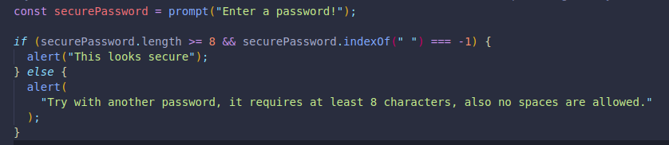
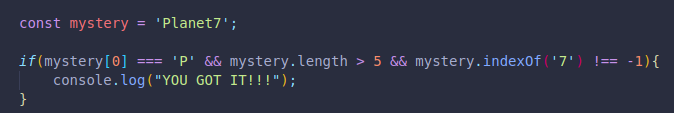

It is represented with two apersands together.
It will have values or expessions on its left and right, BOTH need to be true for the code to be true, if one is not, the whole code results in false:
7 > 1 && 1 < 50;
true
false
false
We can use this logical operator to combine conditions, like in our previous password checking conditional,
Here we easily combined the twwo factors or pieces of logic we were checking for with the AND logical operator.
Or here, where we check to see if the word starts with a capital P, AND that the length is more than 5 characters long, AND that there is a number 7 in it.
